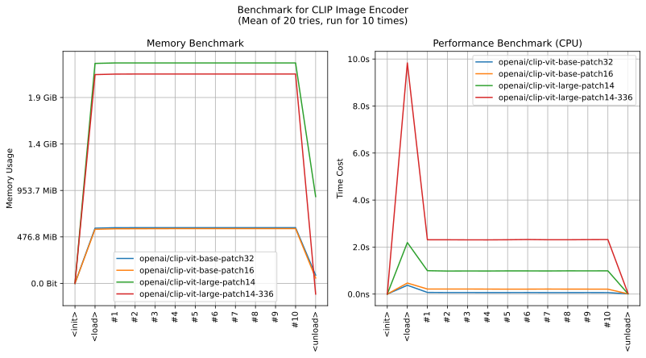
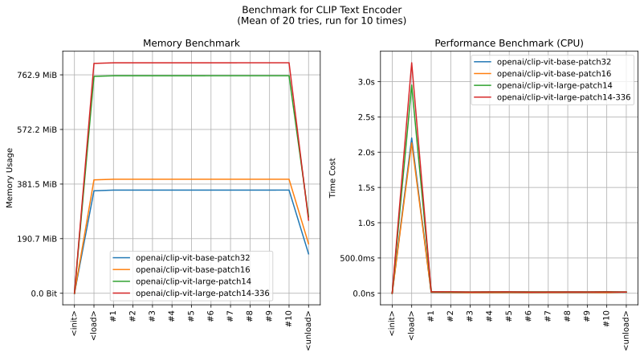

realutils.metrics.clip
- Overview:
CLIP (Contrastive Language-Image Pre-training) model utilities’ module.
This module provides functions for working with CLIP models, including image and text embedding generation and classification. It supports loading ONNX-converted CLIP models from Hugging Face Hub and performing inference for both image and text inputs.
All models and preprocessors are hosted on Huggingface repository deepghs/clip_onnx

This is an overall benchmark of all the CLIP models:

get_clip_text_embedding
- realutils.metrics.clip.get_clip_text_embedding(texts: str | List[str], model_name: str = 'openai/clip-vit-base-patch32', fmt='embeddings')[source]
Generate CLIP embeddings for input texts.
- Parameters:
texts (Union[str, List[str]]) – Input text or list of texts to encode
model_name (str) – Name of the CLIP model to use
fmt – Output format (‘embeddings’ or ‘encodings’)
- Returns:
Text embeddings or encodings based on fmt parameter
- Example:
>>> from realutils.metrics.clip import get_clip_text_embedding >>> >>> # one text >>> emb = get_clip_text_embedding('a photo of a cat') >>> emb.shape, emb.dtype ((1, 512), dtype('float32')) >>> >>> # multiple texts >>> emb = get_clip_text_embedding([ ... 'a photo of a cat', ... 'a photo of a dog', ... 'a photo of a human', ... ]) >>> emb.shape, emb.dtype ((3, 512), dtype('float32'))
get_clip_image_embedding
- realutils.metrics.clip.get_clip_image_embedding(images: str | PathLike | bytes | bytearray | BinaryIO | Image | List[str | PathLike | bytes | bytearray | BinaryIO | Image] | Tuple[str | PathLike | bytes | bytearray | BinaryIO | Image, ...], model_name: str = 'openai/clip-vit-base-patch32', fmt='embeddings')[source]
Generate CLIP embeddings for input images.
- Parameters:
images (MultiImagesTyping) – Input images to encode
model_name (str) – Name of the CLIP model to use
fmt – Output format (‘embeddings’ or ‘encodings’)
- Returns:
Image embeddings or encodings based on fmt parameter
- Example:
>>> from realutils.metrics.clip import get_clip_image_embedding >>> >>> # one image >>> emb = get_clip_image_embedding('xlip/1.jpg') >>> emb.shape, emb.dtype ((1, 512), dtype('float32')) >>> >>> # multiple images >>> emb = get_clip_image_embedding(['xlip/1.jpg', 'xlip/2.jpg']) >>> emb.shape, emb.dtype ((2, 512), dtype('float32'))
classify_with_clip
- realutils.metrics.clip.classify_with_clip(images: str | PathLike | bytes | bytearray | BinaryIO | Image | List[str | PathLike | bytes | bytearray | BinaryIO | Image] | Tuple[str | PathLike | bytes | bytearray | BinaryIO | Image, ...] | ndarray, texts: List[str] | str | ndarray, model_name: str = 'openai/clip-vit-base-patch32', fmt='predictions')[source]
Perform classification using CLIP model by comparing image and text embeddings.
- Parameters:
images (Union[MultiImagesTyping, numpy.ndarray]) – Input images or pre-computed image embeddings
texts (Union[List[str], str, numpy.ndarray]) – Input texts or pre-computed text embeddings
model_name (str) – Name of the CLIP model to use
fmt – Output format (‘predictions’, ‘similarities’, or ‘logits’)
- Returns:
Classification results based on fmt parameter
- Example:
>>> from realutils.metrics.clip import classify_with_clip >>> >>> classify_with_clip( ... images=[ ... 'xlip/1.jpg', ... 'xlip/2.jpg' ... ], ... texts=[ ... 'a photo of a cat', ... 'a photo of a dog', ... 'a photo of a human', ... ], ... ) array([[0.98039913, 0.00506729, 0.01453355], [0.05586662, 0.02006196, 0.92407143]], dtype=float32)